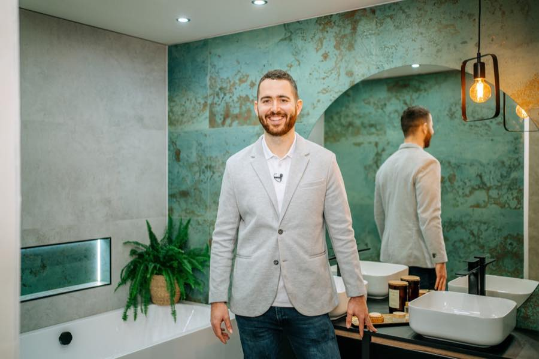
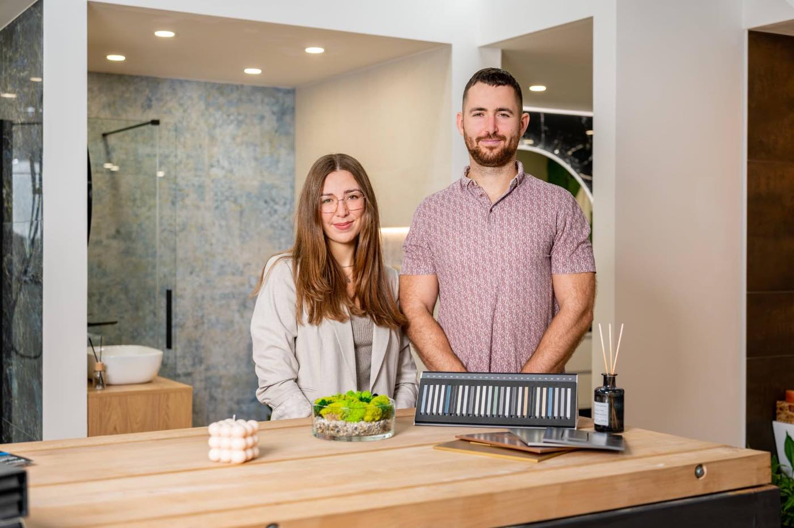

01
Zkušenost z praxe,
ne z knih
Každý princip, o kterém mluvím, jsem si ověřil ve své firmě. V krizích i v růstu. Ne v učebnici.
Vedu firmu, kterou jsem sám postavil. To, co spolu budeme řešit, jsem si nejdřív odžil.
Úvodní konzultace 15 minut, zdarma a nezávazně
Koučuju majitele firem a CEO, kteří nesou odpovědnost za celek a nemají to s kým probrat. Ve 23 letech jsem zakládal Koupelny Syrový, dnes vedu firmu se 4 studii a v roce 2025 jsem se objevil v žebříčku Forbes 30 pod 30. Spolupráce začíná nezávaznou konzultací na 15 minut.

„Nedostal jsem firmu na stříbrném podnose.“ Matouš Syrový pro Forbes, srpen 2024
V roce 2019 mi bylo 23. S manželkou a sestrou jsme zakládali Koupelny Syrový. Hned na začátku jsme do nich převzali závazky z předchozí kapitoly rodinného podnikání. Nezačínali jsme na zelené louce ani s plným účtem. Začínali jsme v mínusu.
Táta zasvětil koupelnám celý profesní život a předal mi řemeslo i cit pro obor. Co předat nešlo, byla hotová firma. Tu jsme museli postavit znovu. A já se u toho musel naučit věci, které mě do té doby nikdo neučil.
Prošel jsem si postupně vším. Jezdil jsem ještěrkou, dělal skladníka, stál za pultem jako obchodník. Zpětně to považuju za nejlepší školu, jakou jsem mohl dostat. Žádná jiná by mi tak přesně neukázala, jak firma zevnitř doopravdy funguje.
Dnes vedu firmu se 4 studii. A to, co mě ta cesta naučila, předávám dál.
Řešíte něco, co nemáte s kým probrat?
Rezervovat konzultaci →
Žádný předpřipravený program, kterým vás provedu bez ohledu na to, kdo jste. Nejdřív se poznáme, teprve pak si řekneme, co dává smysl.
15 minut, zdarma a nezávazně. Potkáme se a řekneme si, co pro vás můžu udělat a jestli vůbec.
Kde jste, kam chcete a co vám v tom reálně stojí v cestě. Bez obecných frází.
Sezení zhruba po 2 týdnech. Mezi nimi zkoušíte věci nanečisto ve své firmě.
Po pár měsících se ohlédneme, co se skutečně změnilo, a rozhodneme, jestli pokračovat.
Tohle jsou věci, se kterými za mnou lidé chodí a kterými jsem si sám prošel. Není to nabídka, ze které se musíte trefit.
Pálí vás něco, co tu není? Nevadí. Na úvodní konzultaci si řekneme, jestli vám v tom umím být užitečný. A když ne, řeknu vám to rovnou.
15 minut stačí na to zjistit, jestli si sedneme.
Rezervovat konzultaci →Každý princip, o kterém mluvím, jsem si ověřil ve své firmě. V krizích i v růstu. Ne v učebnici.
Nerozhoduju o cizím rozpočtu. Vlastní firmu jsem stavěl ze záporných čísel a to riziko nesl na sobě.
Vím, co obnáší stavět firmu s rodinou a navazovat na generaci před sebou. Včetně toho, o čem se nemluví.
Nepracuji se šablonami. Vnímám váš příběh, kontext a vzorce. Teprve pak hledáme, co potřebujete.
Neplatíte si mě za souhlas. Když vidím, že jdete špatným směrem, dozvíte se to, i když to nechcete slyšet.
Cílem není dobrý pocit po sezení, ale trvalá změna v tom, jak se rozhodujete a jak vedete sebe i firmu.
Pro majitele firem, CEO a nástupce v rodinných podnicích, tedy pro lidi, kteří nesou odpovědnost za celek. Nezáleží tolik na velikosti firmy jako na tom, že rozhodnutí, která děláte, nemáte uvnitř firmy s kým probrat.
Trvá 15 minut, je zdarma a k ničemu vás nezavazuje. Potkáme se, řeknete mi, co řešíte, a já vám na rovinu řeknu, co pro vás můžu udělat. Pokud usoudím, že vám nejsem užitečný, řeknu to hned.
Cena se odvíjí od rozsahu a frekvence sezení, takže ji neuvádím paušálně. Řekneme si ji konkrétně na úvodní konzultaci, dřív než se k čemukoli zavážete.
Většina věcí, které stojí za řešení, se nedá zvládnout za jedno sezení. Obvykle jde o několik měsíců se sezením zhruba po 2 týdnech. Po několika sezeních společně vyhodnotíme, jestli má smysl pokračovat.
Obojí. Osobně se potkáváme v Praze, online funguje stejně dobře a pro klienty mimo Prahu je to zpravidla praktičtější.
Tím, že souběžně vedu vlastní firmu. Nevycházím jen z metodiky, mluvím o situacích, kterými jsem si prošel a které řeším dodnes. To má své hranice: nejsem terapeut a nejsem odborník na každý obor. Zato vím, jaké to je nést rozhodnutí, u kterého jde o hodně.
Právě proto je úvodní konzultace krátká, zdarma a nezávazná. 15 minut stačí na to, abychom oba poznali, jestli si sedneme.
15 minut, zdarma a nezávazně. Potkáme se a řekneme si, co pro vás můžu udělat. Ozvu se do 48 hodin.
Nebo napište přímo na matous@koupelnysyrovy.cz
Správcem osobních údajů je Matouš Syrový, kontaktní e-mail matous@koupelnysyrovy.cz.
Prostřednictvím formuláře na této stránce jsou zpracovávány tyto údaje:
Právním základem zpracování je váš souhlas podle čl. 6 odst. 1 písm. a) nařízení GDPR. Údaje slouží výhradně k vyřízení poptávky a domluvě úvodní konzultace. Nejsou využívány k zasílání obchodních sdělení.
Údaje jsou uchovávány po dobu nezbytnou k vyřízení poptávky, nejdéle 12 měsíců od odeslání, není-li mezitím uzavřena spolupráce. Jsou ukládány do tabulky ve službě Google Workspace (Google Ireland Limited) jako zpracovatele.
Máte právo na přístup ke svým údajům, jejich opravu nebo výmaz, na omezení zpracování, na přenositelnost a právo kdykoli odvolat souhlas, stačí napsat na uvedený e-mail. Rovněž máte právo podat stížnost u Úřadu pro ochranu osobních údajů (uoou.cz).
Tento web nepoužívá analytické ani marketingové cookies a nesleduje návštěvníky. Načítá pouze písma ze služby Google Fonts.